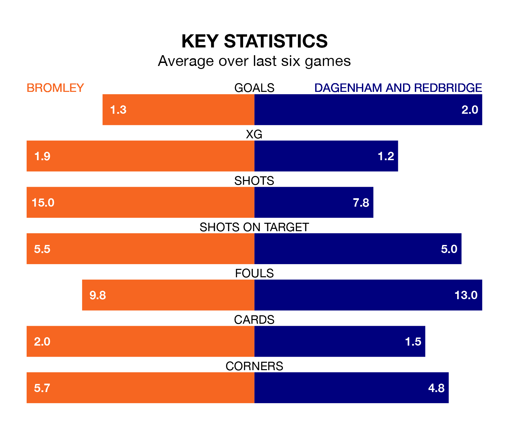

Bromley host Dagenham and Redbridge on Tuesday at Hayes Lane in the National League.
In their last league match, on Saturday, Bromley beat Chesterfield 4-3 at home, with goals from Michael Cheek (three) and Samuel John Woods.
Dagenham & Redbridge drew, 1-1 away at York City, with Jake Hessenthaler scoring their goals.
Bromley are second in the table after 33 games, of which they have won 17 and drawn 10, earning 61 points.
Dagenham & Redbridge are 10 places behind the Ravens in 12th, with 11 wins and eight draws putting them on 41 points.
With 57 goals in 33 games so far this season, the home team are scoring more than average in the league with 1.7 goals per game. And they are conceding fewer than average, letting in 38 goals at a rate of 1.2 per game.
The visitors, meanwhile, are below average scorers, with 1.4 goals per game, compared to a league average of 1.5. They have also conceded 1.4 goals per game.
In the last 10 years, Bromley and Dagenham & Redbridge have played each other on 15 occasions. Bromley won four of them, Dagenham & Redbridge nine, and they drew twice.
On average, the Ravens scored 1.1 goals and Dagenham & Redbridge 1.9 in those matches.
Their last meeting was on September 19, when Bromley won 1-0 away.
Bromley are in disappointing form in the National League, with one win and three draws from their last six games.
With two wins and two draws over that period, Dagenham & Redbridge's form is slightly better – they have taken eight points from 18, compared to Bromley's six.
Updated: 12:18 (UTC), 19/02/24